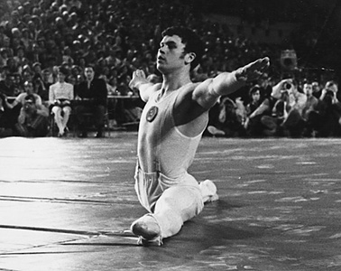

German Bogdanov (USSR)
1970 World Championships Team
Silver Medalist
1973 USSR FX and PB Champion

Medal Total
World Championships: 1 Silver
German was born in 1948 and trained at CSKA Moscow. He first joined the USSR team (as a junior) in 1968.
Competition Results
1967
Jr. USSR Cup: 1st V
1969
Moscow Championships: 3rd AA
USSR Championships: 20th AA, 3rd HB
1970
USSR Championships: 5th AA, 2nd FX
USSR Cup: 5th AA
USSR-FIN Dual Meet: 1st Team, 6th AA
USSR-GDR Dual Meet: 1st Team, 1st AA, 1st FX, 1st V, 1st PB, 1st HB
World Championships: 2nd Team, 18th AA
1971
Chunichi Cup: 8th AA
JPN-USSR Dual Meet: 2nd Team, 6th V
USA-USSR Dual Meet: 1st Team, 2nd AA
USSR Championships: 15th AA
USSR Cup: 3rd AA
1972
USSR Championships: 1st Team, 7th AA
1973
USSR Championships: 20th AA, 1st FX, 1st PB, 4th V, 5th HB
USSR Cup (April): 2nd AA, 2nd V, 2nd PB, 3rd HB
USSR Cup (September): 3rd AA, 1st FX, 1st PB, 4th V, 5th HB
USSR-JPN Dual Meet: 2nd Team, 3rd AA, 2nd HB, 3rd V
1974
USSR Championships: 10th AA
This page was created on November
05, 2006 and was last updated on September 22, 2012.
© Gymn Forum